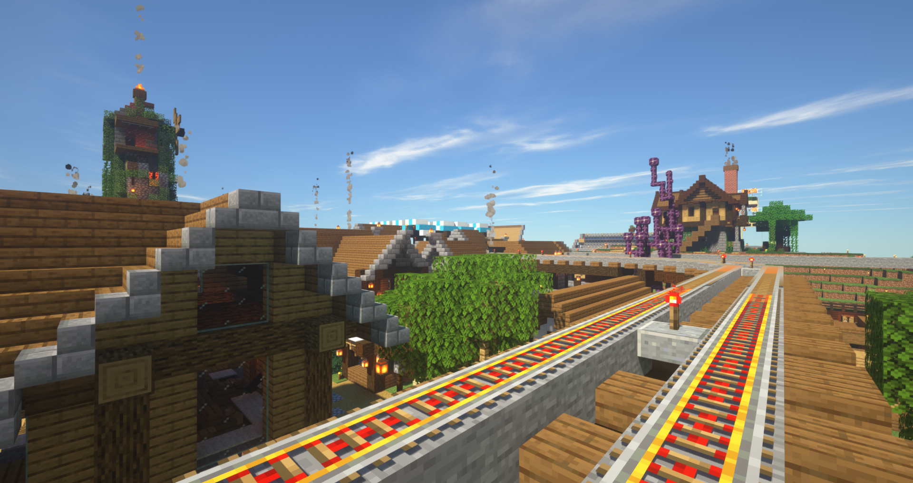

主鎮
歐式建築

主街道
斑駁的路面，老舊的店鋪
乘載著眾勇者最初的那份回憶
不過四處堆放的雜物
想必愛乾淨的人需要花一些時間適應
穿梭在其中容易失去方向感
據傳聞有些秘密通道和寶藏隱藏在小巷裡
不知道是真是假？
負責人：白豹、斑馬、似乎
聖母院
最初物資匱乏的拓荒時期
飢餓、勞累、怪物侵擾
時不時威脅著眾勇者的性命
在這個艱難時刻
聖母院擔任起了撫慰眾勇者心靈的信仰中心
同時也是各樣大型慶典、婚禮、喪禮的舉辦場所
負責人：白豹
燈籠市集
不論是耕田、打鐵、狩獵、捕魚
眾勇者依專長各司其職
並將辛勤工作的成果留下自身所需
其餘全數贈予燈籠市集的村民
為了報答眾勇者的善心
村民們也會回贈他們珍藏的綠寶石作為謝禮
負責人：白豹、斑馬
噴火龍
負責人：幽靈
萊茵河
流淌於勇者村兩大生活圈交界處的河川
一端為繁忙的市鎮
另一端為悠閒的農村
兩岸僅隔數米，卻有著極大差距
彷彿分別處在不同時空般
負責人：白豹、斑馬
全物品
動員全村開挖
在地底打造出如此大型的儲藏空間
供存放各樣收集而來的戰利品
並且只要是勇者村成員
都可以任意取用
但絕對切記，入內請勿攜帶斧頭
負責人：白豹、斑馬、村長
會所
從討伐惡龍、探索地城
到協尋寵物、照顧小孩
各樣形形色色的任務張貼於此處，眾勇者可自由接取
同時也是一座小型客棧
提供行經此地的旅人們一個暫時的歇腳處
負責人：木葉
跨海大橋
負責人：萊茵
住宅區
不論是作為庇護所
又或者是作為生財工具
每間房子皆是眾勇者為自己親手打造
僅屬於他們的家
是勇者村最不起眼
卻最有溫度的建築
負責人：眾勇者
農業區
勇者村雖已邁入工業時代
卻仍不忘飲水思源
為了感念當初餵飽全村人的農田
眾勇者不只將之保存下來
更是花費心力進行改造、擴建
負責人：似乎、斑馬、花梨、potato

工業區
脫離農業時代後
勇者村進入了效率至上的工業時代
各樣自動化機器開始取代人力生產
讓眾勇者得以投入更多心力，專注於建造更宏偉的建築
促成了後續許多大型企劃的誕生
負責人：Kan、JJGP、花梨、樂樂
村長之墓
負責人：眾勇者
鐵路系統
隨著其他分鎮陸續設立
為了更加方便來往各鎮，以及載運工業原料
勇者村自主鎮為中心點
修築了向外通往各鎮的鐵路系統
如今鐵路已綿延遍滿全村
負責人：白豹、村長
- 
-

海上交易所
各樣工業原料的大量出產
為勇者村帶來龐大的商機
渡海而來的商人們
也逐漸在岸邊建立起他們的貿易據點
為日後更為絡繹的商業活動打下基礎
負責人：樂樂、似乎、白豹
巨大樹林
為了平衡工業化帶來的環境汙染
眾勇者將過去的伐木場改造為生態保育園
經過細心的照顧、打理後
如今參天神木已四處林立
也因此成為了勇者村的名勝景點之一
負責人：白豹、艾謐灰


地獄門
負責人：樂樂

石山之貓塔
當月那一片薄影輝灑在勇者村之時
本應恬靜棲身於那帶的遠古木樹林
像躲開灑下來的月華般似
從茂密的身姿中闢開一條不甚為人注意的小道
在盡頭處有莫然從地面伸出的小丘，上頭架著隱蔽山莊
木質高塔就這樣樸實聳立著
依附在這裏的貓居高臨下於人前現身
只見一瞬，便被迷霧掩蓋
直至日月交替，山莊便無情地悄悄隱去
負責人：鑽石山
圖書館
在科技日漸發達的現今
眾勇者已不再需要到處賭命拚搏、斬殺怪物
知識取代了蠻力，成為強者的真理
圖書館便應運而生
負責人：白豹


員工宿舍
為了讓每日勞碌奔波、奉獻己身於勇者村的村民們
擁有更好的休息環境
首席建築師精心規劃了這棟華麗的宿舍
並且將內裝交由村民們自行設計
因此每個房間都充滿了不同個性
負責人：白豹
千陽號
負責人：JJGP
聖伯多祿大殿
參考了聖彼得大教堂的設計
做為勇者村巨大建築之一
金碧輝煌的歐式建築為勇者村增加了一股新的風格
高聳入雲的教堂外表，卻包含著莊重嚴肅的內飾
負責人：暗帝


獸人村
隨著勇者村的發展
原本在大陸上橫行的魔物已被消滅殆盡
而少數擁有智慧，願意跟人類和平相處的魔物
與勇者村簽署了和平協議
並在主鎮旁建立了一座獸人村落
經過長年的頻繁交流後，生活習慣已與人類無異
負責人：白豹
空島
負責人：幽靈


地下城
在村莊的一角，有個通往地下的不起眼入口
傳聞在那底下埋藏著勇者村所有陰暗面
過去，曾經有過地下城區的開發案
受徵召進入地下的勇者與村民們，被各樣壓迫與勞動所殘害
許許多多無辜的生命也因而葬身於此
也許是受到亡靈們的怨恨阻撓吧，開挖作業總是無法如期執行
使得工程延宕至今，故現在的地下城仍是一片廢墟
負責人：眾勇者